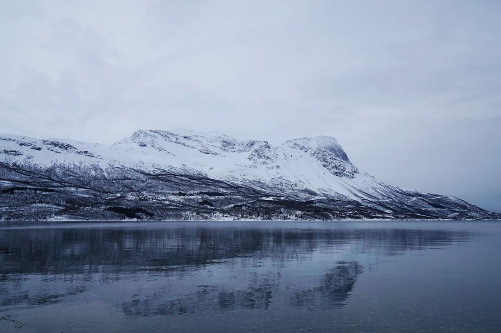
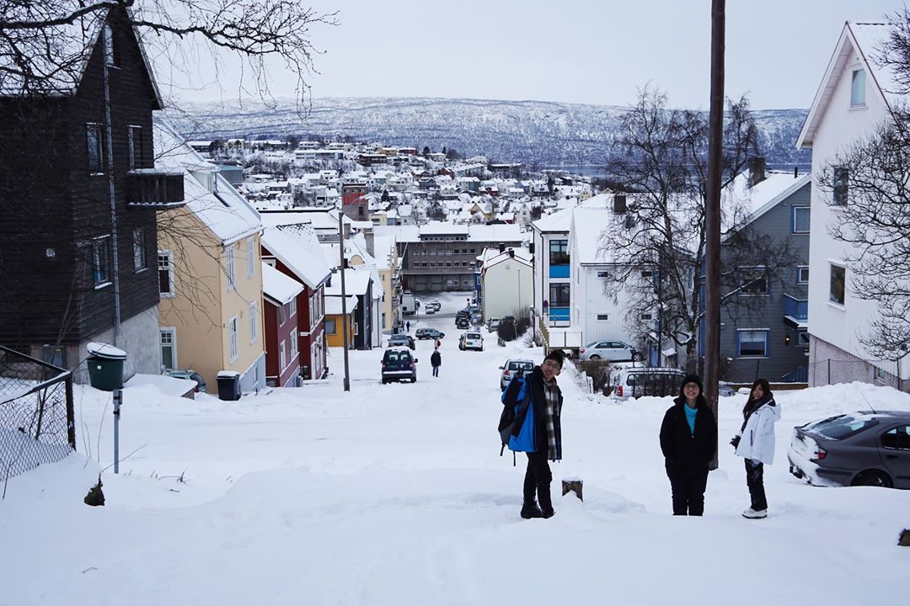

Ex檔案14-Sweden破產之旅‧係極光阿!
11/5/2017
今日一早向挪威出發!

人生第一次坐巴士跨越國界(之後發現係歐洲好平常)，特登紀錄低。
一入到Norway，見到既景即刻唔同晒，Sweden好多時都係白茫茫一遍，但Norway就有好多黑色既樹。
冰天雪地加上海邊既小屋，好似去左第二個世界咁。
我地仲比個導遊呃左去飲北冰洋既海水，佢話咩黎到呢到個個都會試下飲喎。
其實除左凍D同乾淨D之外，同普通海水係冇分別既。
呢個小鎮叫Narvik，對出個海好出名，以前二戰果陣德國既海軍就係係呢到試圖通過去打英國（好似係），所以呢個海峽好有歷史價值。
好健康既我地走左去跟導遊行山，望到條路都覺得好漫長。
係冰天雪地行山真係唔易。
首先係你既衫比平時重幾倍，又肥又腫，超級唔方便。
第二係如果Ｄ雪有厚度，你仲要用力抬番係隻腳。
第三係雪地有時真係會好滑，落山絕對係比上山辛苦，同行既人差唔多個個都仆過街。
途中經過一個碉堡，係以前用黎睇下有冇德國既飛機飛過用既。
半山有間大學，呢到既大學生一定冇肥仔... 因為番學如果唔揸車，你只能夠係city center 行上半山... 行到上山影番兩張文青相。
一場黎到Norway，回程之前緊係要食下呢到好出名既鯨魚肉。
一個burger 盛惠120HKD，呢到Ｄ物價比瑞典仲要貴少少.... 老實講Whale真係冇咩特別，食落口感幾特別，但味道好似真係同牛肉差唔多。

夜晚回程番去焗sauna，呢間屋企就係我地個sauna room，隔黎就係abisko既冰湖。
點解sauna room要起係冰湖隔離呢? 因為焗完sauna之後你係要跳落去個冰湖入面降溫... 望到個冰湖口都打冰震... 為左多謝大家click入黎睇，送上一個岩岩係冰湖到跳出黎既德國美女一位。
今次瑞典之行最重要既一環就係為左睇極光，雖然一直天氣都唔係幾好，但最後一晚留係abisko，我仍然決定出去碰下運氣。
我地11點出發既時候其實仲係一天都係雲，企係個冰湖到一邊食住風，一手拎住支vodka，同自己講咁難得先黎到呢到，無理由唔等落去既!
企左個半鐘到，個天Ｄ雲真係散緊！！！！ 望住呢個天空，其實就算睇唔到極光，我都覺得呢一程已經值左。
當然我最後係冇白等既！ 如果你想問眼見到既野同張相一唔一樣呢? 答案係完全唔一樣既！用眼見到既只係一條淡淡地既白帶，只有極光指數好高好高好高既時候你先有機會用眼見到綠色既極光。
要影到相入面既景，你手頭上係需要有合適既器材，如果有興趣想知相機setting可以搵我交流下。
多謝兩個痴線佬天寒地凍陪我一齊係冰湖到企左三個鐘，走之前留番張合照。 
同行有一位朋友正日生日，可以睇住極光過生日都真係幾幸福。
勿忙中冇準備D 咩禮物，大家一齊準備左一個小小既驚喜，希望你今個生日過得開心。
—————————————————————————————————————————————
第二日我地又去左行山，今次行國家公園。
國家公園保留左完美既自然景色，再一次靚到唔識呼吸。
— — 終點係唯一一條通向abisko既路軌，走之前係到同abisko say個goodbye。
最後一晚我地係Jokkmokk到過，呢到好似保良局既campsite, 夏天既時候學生會黎Campping。
呢張床要上去真係好高難度... — 話就話呢到係一個鎮，但其實真係好細，得一條主要車道，一眼望晒。
唯一一座教堂。

夜晚一齊係屋企煮飯，因為就算你有錢，呢到都冇咩餐廳可以俾你食飯... 夜晚又係出去影極光既時間，我想講外國人都真係幾無耐性，等20分鐘就話好凍唔想等，番晒入屋訓覺。
可能係因為佢地如果想睇極光既話冇我地咁難啦。
今晚天朗氣清，極光指數仲強過尋日，用肉眼都可以見到Ｄ極光係到跳躍。
雖然無幸見到紅色既超強極光，但我已經覺得今次呢程極光之旅好完美。
— 做camera man有個好處，就係你係絕對唔需要去主動抄人牌。
一張靚相，已經可以換晒全團所有靚女既電話番黎。
— 走之前同大家一齊影番張合照留念。
仲有我地既導遊，可能係我遇過最好既導遊。
今次既旅程雖然好貴（係我成個exchange除冰島之外最貴既trip)，但睇到最想睇既極光，識到一班痴痴地線既朋友，又幾開心既。
旅途上遇到既人可能真係只係生命中既過客，縱然打開facebook,ig，你仲會見到佢update佢既近況，但如果想再相見，真係唔係一件咁易既既事。
Thank you, all of my
friends.
-------------------------------------------------------------------------------------------------------
Previous: https://goo.gl/1L6AuA Next: